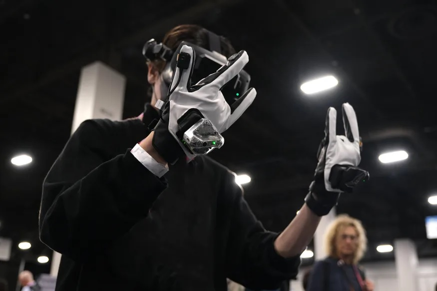
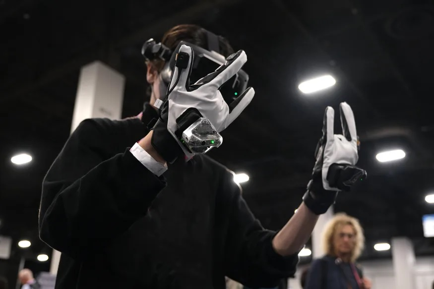
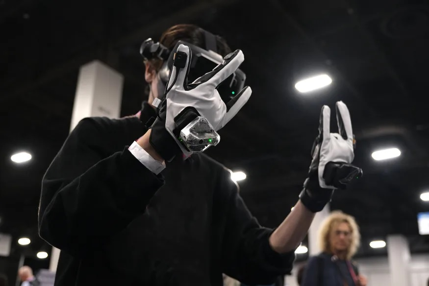

Galería
 

Los guantes Magos son una tecnología punta de interacción humano-ordenador. Estos guantes ofrecen una experiencia inmersiva en aplicaciones XR, siguiendo tus dedos con gran precisión, ya que se ajusta a todas tus articulaciones, con 22° de movimiento libre, y retroalimentación háptica para tocar objetos virtuales. A su vez, los guantes tienen un seguimiento en tres dimensiones de tu mano y devulven respuestas hápticas para simular la sensación de estar tocando un objeto.
